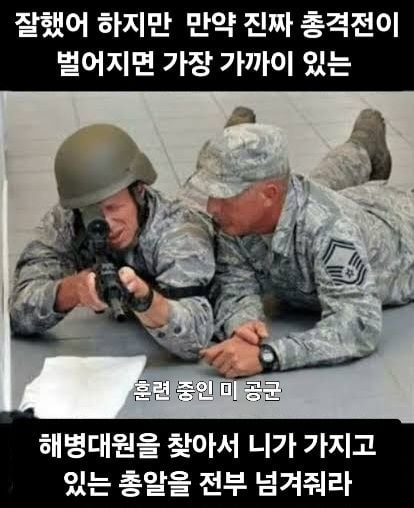
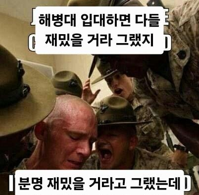
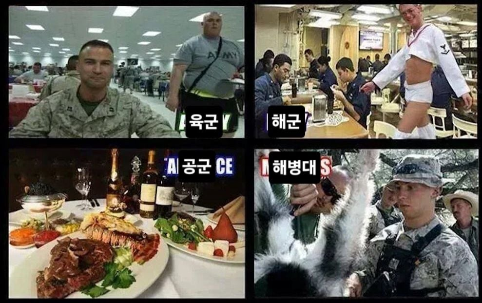
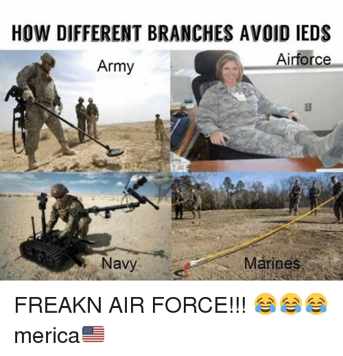
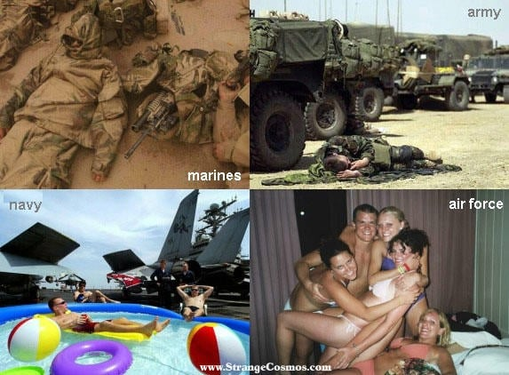
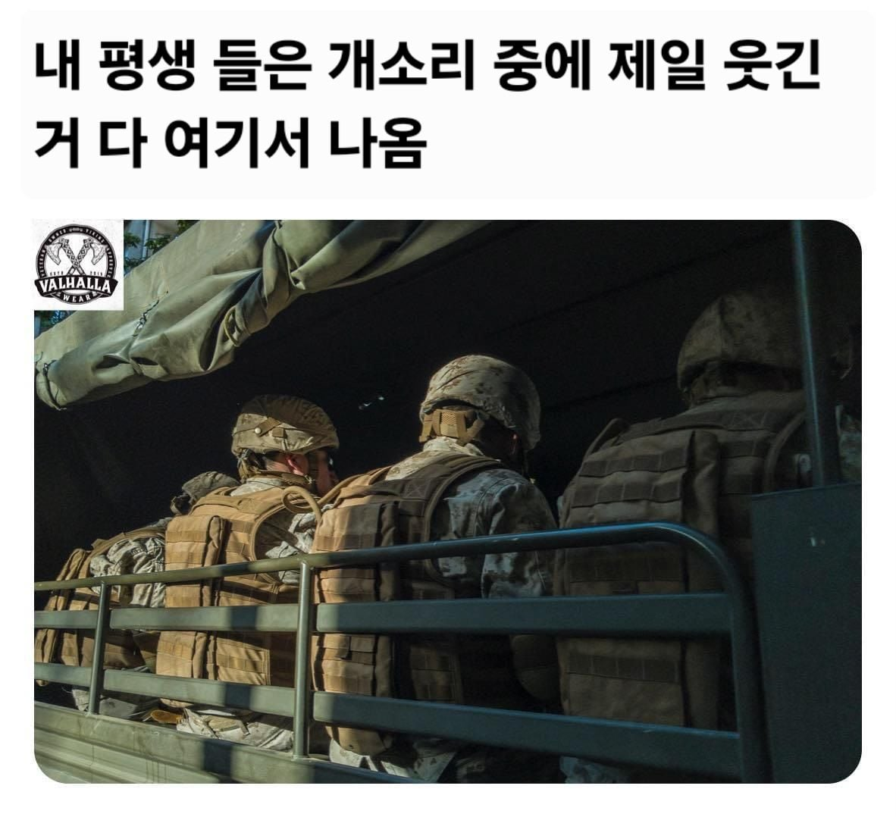

에어공익은 만국공통인가ㅋㅋㅋㅋ






에어공익은 만국공통인가ㅋㅋㅋㅋ
군인이라는 이미지는 결국 육군이지 ㅋㅋ
공군이 총들고 싸워야된다? 그럼 이미 전쟁 진거임
그런데 우리나라는 북괴 특작부대의 기습공격으로 전쟁 초라면 공군이 총을 들일이 생길거 같긴해 ...
그럼 진거임
졌다기 보다는 공군 자체 방어병력이 잘 막고 비행기를 잘 지키고 날리면 이긴거고
적의 의도대로 공군기지의 비행기를 상실했으면 최소한 그 전투는 실패한게 맞음
공군이 전부 비행기 타는거도 아닌데 왜 총을 안들어
에어공익 밈은 여기도 있는데
체어포스란 언어유희도 있음
왜 해군도 좆밥 취급이냐
뱃사람들 생각해보면 육군보다 좀 더 빡셀거라고 생각했는데
예전부터 저지능에 몸뚱이만 튼튼해서 밥대신 크레파스 씹어먹는 머저리들 이라는 밈이 있었거든
한국 해병대 이미지 = 미군 해군 이미지 같음
보니까 막 유치원으로 묘사하는데?
풀장에서 물놀이하고
밑에서 두 번째 짤 말하는 거임?
아마 쉴 때 뭐 하는지 말하는 거일 거임
해병대 : 아무데서나 잠
육군 : 그래도 이불은 깔고 잠
해군 : 간이풀장 만들고 썬탠하면서 잠
공군 : 콜걸들이랑 잠
그건 해병대
그건 해병대에서 먼저 나온거예요
기술군이니까 어쩔수없지...
해군 식당에 보추 뭐냐
식당의 보추니깐 뭐겠냐? 맛있게 드세요... 지 ....
걸어다니는 후식 ㄷㄷㄷ
어느정도는 사실에 부합함, 어딜가나 공주들이 있음
아아.. 육군.....
해병대 취급은 미국도똑같네 ㅋㅋ
다시 태어나면 꼭 chairforce
해군 욀케 섹시함
난 공군 가면 연애 할 수 있을까 기대했는데 결국 못 해봄. 지금도 아다다.
공군 나왔는데 공병대대라 개빡셌음. 타 대대 아저씨들도 우릴 불쌍하게 여김. 하지만 공군 출신이라 땡보였단 소리 맨날 듣는다 ㅠ
친구 하나가 공군갔는데 방공 끌려갔더라.. 산골에..
공군 3대장이 시설 방공 급양이였던가 기억이 안 나네
ㄴㄴ 3D
헌병, 방포, 급양
공군 수면점호인가 누워서 점호한다는 소리듣고 경악함
공군 개꿀빤다는 이미지는 국가를 가리지않네 ㅋㅋㅋ
막짤이 개웃김ㅋㅋㅋㅋㅋ
공군을 가야 개꿀빠는구나
막짤 공군 헤그세스여?
Chair Force 는 만국공통